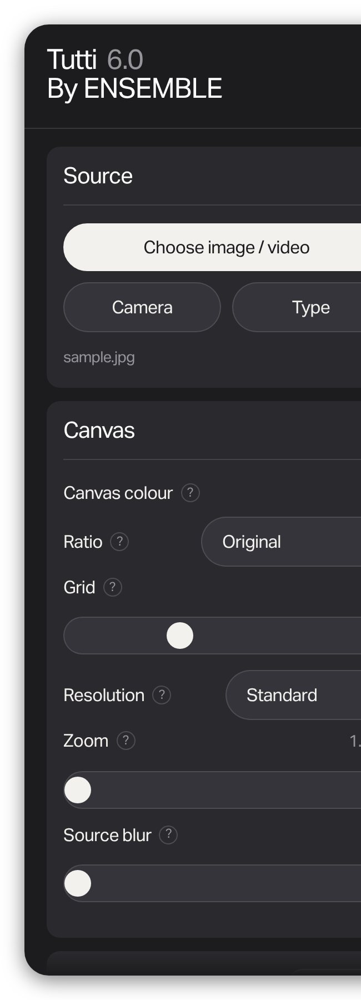
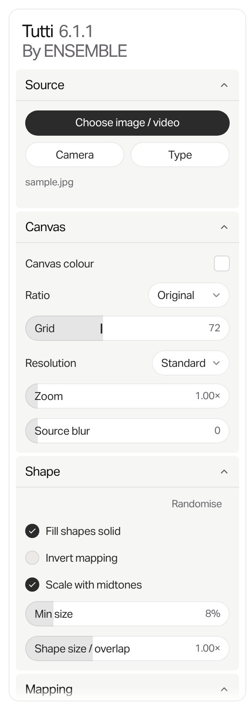
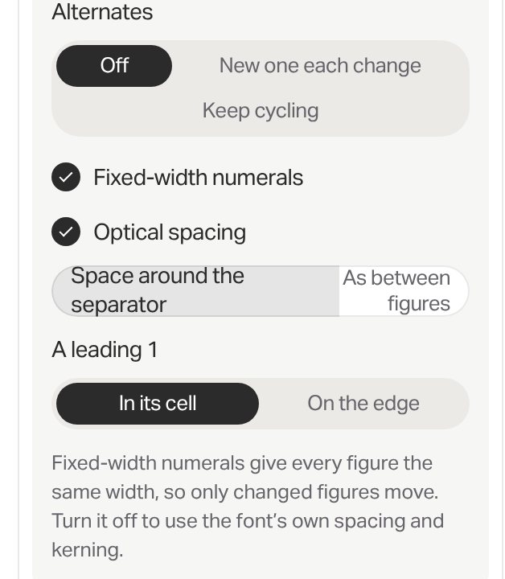
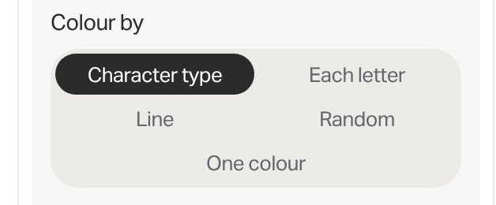
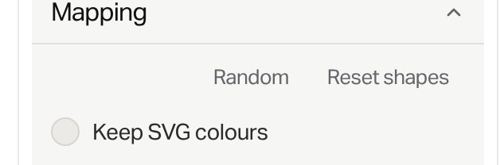
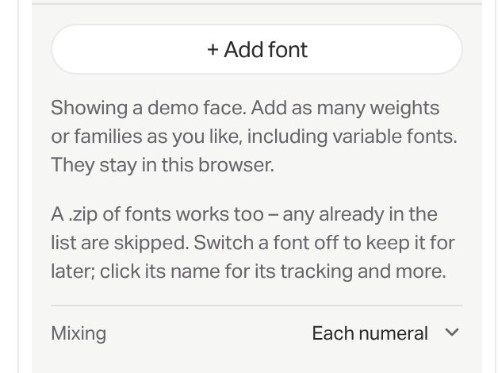

0In short
- The problem. In October the tools got smaller and flatter at the same time: one weight, six type sizes doing the work of two weights, four near-identical greys, and a slider that's too faint to hold. That's why Tutti feels less usable than 6.0 – nothing tells the eye where to land.
- What SOH Motion shows. Small type works when it has weight. Settings about the canvas belong on the canvas. One black button. A lozenge slider is fine when it has contrast and a handle that never disappears.
- A – Evolution. Our frame, made legible. Aktiv Medium for section titles and the chosen option, smaller secondary text, fewer boxes, black kept for actions, a dot slider with a value you can type, visible changes, undo, and fluid motion.
- B – Studio. The bigger push, after SOH. What goes in on the left, settings on the right, the canvas in the middle on a dotted pasteboard with its own toolbar, Export top right, a transport bar along the bottom. A crisper inspector with bold section titles, the lozenge done properly, Find a setting (⌘K) and a column that shows every change.
- Recommendation. A's foundations first, in all four tools – B needs every one of them. Then try B on Segue: it's internal, it's the newest, and its media list is exactly what a left panel is for.
1Audit
What's working – keep it
- The frame. The work fitted in the clear space, Preview to fill the window, one place for Export, Presets kept separate. People find things where they expect them.
- Summaries on shut sections ("Original · Grid 72"). The panel can stay short without hiding what's set.
- Light by default, no shadows. Calm, and the work stays the brightest thing on screen.
- Segue's details: values you can type (0.4), the Kind tiles, literal names. These should spread, not stay in one tool.
- Tutti's band rows – number, swatch, name, SVG. A good list pattern for anything with rows.
Why Tutti feels less usable than 6.0


- Type went from 17 to 14 px, titles from 20 to 16. Smaller, and the step between levels shrank too.
- Sliders lost their handle. 6.0 had a label and value above a track with a dot. 6.1 put the label inside a pale lozenge with a 1 px tick that hides near the words – at Zoom's default there's no handle at all.
- Sections lost their edges. Dark cards on a darker panel became grey cards on white, at 1.08 : 1 – edges you can barely see.
- The panel narrowed from 340 to 300 px.
Each change was reasonable on its own. Together they took away size, weight and contrast at once, and nothing replaced them. The fix isn't to go back to 6.0 – it's to put hierarchy back with weight and contrast, so the panel can stay compact.
What's not working – how it looks
Hierarchy is flat. One weight and six sizes (22, 16, 14, 13.5, 13, 12) – section title 16 against body 14. Titles, labels, options and values all look alike, so the eye has nowhere to land. This is the root of "weirdly less usable".
Grey on grey on grey. White panel, cards at #f6f6f4 (1.08 : 1 against the panel), segmented tracks at #ebeae7 (1.11 : 1 against the card), slider fills at 12% ink. Four nested surfaces that barely differ read as noise, not structure.
Black pills everywhere. Every segmented control marks its choice with a filled black pill – Tempo's Clock section shows four at once. They compete with the real actions (Choose image, Export) and with the work.

The lozenge is too faint. A white track, a 12% fill and a 1 px tick that steps aside near the words. Long labels collide – Tempo's "Space around the separator" wraps onto two lines inside the control.
Segmented controls that wrap. Five or six options break into two or three rows of floating words (Colour by, Feel, Order, Alternates). It stops reading as one control.

Quiet actions look like labels. Randomise, Random, Reset shapes and Even are grey text with no edge, fill or icon. They read as captions, not buttons.

Hints at reading length. Tempo's Fonts section opens with two paragraphs at nearly control size. Help pushes the controls down the panel.

What's not working – how it works
Precision. A faint handle, no typing (bar Segue), and fine steps that exist only for the keyboard and aren't shown. You and the Segue stream have both flagged it.
Long panels. With every section open: Tutti 1,858 px (two screens), Rubato 2,891, Segue 2,946, Tempo 3,382 (nearly four). Finding a control means scrolling, opening sections and remembering where it lives.
You can't see what you've changed. A default looks the same as a change, and there's no reset for a section. Double-click to reset exists, but nothing says so.
No undo, except for Rubato's Randomise.
Motion is on or off. Pills jump, numbers snap, and the timings are one-offs (0.14 s here, 0.42 s there). The "fluid" you asked for needs a few named curves used everywhere.
A crowded island. Tempo's eight views plus Export run to 780 px – wider than most laptop work areas leave.
Four tools, three frames. Rubato and Tempo share the core; Tutti and Segue have frames of their own, so their sliders already behave differently. Whatever we pick has to land in the shared components, or it'll drift again.
2What SOH Motion gets right
Looked at closely on 5 November (motion.soh.studio/app) – sizes, weights and colours read from the page, not guessed.
- An editor in three parts. What goes in on the left (library, media slots), how it looks and moves on the right (Background, Text, Image/Object, Motion, Arrange, Audio), the canvas in the middle with its own toolbar and a timeline underneath. You always know which side to look at.
- Small type with real weight. Geist at 11–14 px: section titles 13 px semibold, labels 12 px grey, values 12 px in tabular figures – three weights. It's the "smaller, in Medium" you asked for, done consistently.
- Canvas settings live on the canvas. The toolbar holds Frame 4:5, Cards Match frame and the loop length as label-and-value pills – out of the inspector, next to the thing they change.
- One black button. Export, top right. Everything else is a quiet grey fill.
- Its sliders are lozenges, like ours – but with a solid track, a darker fill, a black handle that never hides, and a value you can click. So the lozenge isn't the problem; ours is too faint.
- A slot beside every control. Each one has a ◇ to pin its value at the playhead, and the empty timeline teaches it: "No keyframes yet. Click the ◇ beside any control to pin its value at the playhead." Help in the empty state, not in a paragraph.
- A dotted pasteboard, so the work and the chrome never blur. Undo and redo sit by the canvas. ⌘K opens the library. Interface transitions are short – 150 ms on one ease.
A takes
- Hierarchy by weight at small sizes
- 12 px labels, values in tabular figures
- One black button per view
- Help that teaches in the empty state
B takes
- The three-part anatomy and Export top right
- Canvas settings as pills on a canvas toolbar
- The lozenge with contrast and a handle
- The slot beside each control – ours shows changes and resets them
- The pasteboard and a transport bar
We leave
- Geist – Aktiv Grotesk is ours
- Projects and log-in
- Keyframes, for now – though they'd suit Segue and Rubato later, in the same slot
3House principles, revised
Shared by both directions. Where these and the October rules disagree, these win.
- The work is the brightest thing on screen.Chrome is quiet, light and edged with hairlines; no shadows.
- One black thing per view.Black is for the main action – Export, Choose image. Choices are marked with ink and weight, not black fills.
- Hierarchy by weight, not size.Two sizes do the reading (13 and 12); Medium marks titles and what's chosen; Bold appears once per view at most.
- Every value can be typed.Click the number, type, Enter. Arrows nudge, Shift nudges ten times as far.
- Every change shows, and every change undoes.Changed values look different from defaults; a reset is one click away; ⌘Z takes back the last change.
- Settings sit next to what they change.Canvas settings by the canvas, view controls by the view, sources apart from styling.
- Show only what applies.Controls appear when they matter and step away when they don't; shut sections say what's set.
- Find anything in two keystrokes.⌘K and a word gets you to any setting in any tool.
- Motion explains cause and effect.Three named curves, used everywhere; fades instead of movement for anyone who asks for less.
- One kit for four tools.Same parts, same behaviour, same names – fixes land once, in the shared components.
4Two directions
Evolution – sharpen it
- Two weights. Aktiv Medium for section titles, the chosen option and buttons; Regular for the rest. Sizes come down to 20, 14, 13 and 12.
- Fewer boxes. Sections are divided by hairlines, not grey cards. The only grey left is the track behind a choice.
- Black is for actions. The chosen option is a white pill that slides along its track.
- A dot slider. Title on the left, value in a small lozenge on the right – click it and type – and a dot on a line underneath. It catches at the default.
- More than fits a row becomes a menu. No more wrapped pills – Tempo's eight views become one menu in the island.
- Changes show. Changed values turn ink, a red dot marks the section, and Reset appears beside it. ⌘Z undoes, with a line in the island.
Studio – the bigger push
- Inputs left, settings right. Sources and presets in a left panel; styling in an inspector on the right; the canvas between them on a dotted pasteboard.
- A toolbar on the canvas. Undo and redo, and canvas settings as pills – Ratio, Resolution, Show, Frame rate. Export moves top right; time-based tools get a transport bar along the bottom.
- A crisper inspector. Bold 13 px section titles, 12 px labels, values in tabular figures, quiet grey fills.
- The lozenge done properly. A solid track, a darker fill, a 3 px handle that never hides, the value clickable to type.
- A change column. A slot at the right of every row – our ◇ – shows a red dot when that control has moved. Click the dot to reset it.
- Find a setting (⌘K) and Changed, to see only what you've moved. Choices as words, with a line under the chosen one.
5Type
Hierarchy comes back through weight, not size – so the panel stays compact. A uses Medium only; B adds Bold for section titles, which is where "some bold" earns its keep. Your Adobe Fonts kit already has Aktiv Grotesk at 400, 500 and 700.
| Role | Now | A – Evolution | B – Studio |
|---|---|---|---|
| Name and version | 22 Regular, stacked | 20 Medium, stacked, version in grey | 16 Bold, one line in the top bar |
| By ENSEMBLE | 22 Regular, grey | 20 Regular, grey | 16 Regular, grey |
| Section title | 16 Regular | 14 Medium | 13 Bold |
| Control label | 14 Regular | 13 Regular, ink | 12 Regular, grey |
| Options | 13.5 Regular, white on black | 12.5 Regular grey; chosen 12.5 Medium ink on a white pill | 12.5 Regular grey; chosen 12.5 Medium ink, underlined |
| Values | 13 Regular, grey | 12.5 Regular, tabular – grey at default, ink once changed | 12 Regular, tabular – Medium once changed |
| Group heading | 12 Regular, grey | 11.5 Medium, grey | |
| Buttons | 14 Regular | 13 – Medium for the main one | 12.5 Medium |
| Hints | 12–14 Regular, any length | 12 Regular, grey, one or two lines – the rest behind More | |
| Weights in use | 1 | 2 | 3 |
The same two sections, three ways
Canvas and Shape from Tutti. Try them – sliders, values and options all work.
6Sliders
You asked for a dot on a line with the title on the left, and your voice note had the value lozenge on the other side of the title, then "to the left of it" – so both readings are here, next to the stacked version. SOH Motion makes the case for keeping a lozenge if it's done properly, so that's here too. All of them work the same way: click the value and type, arrows nudge, Shift nudges ten times as far, double-click resets, and the handle catches for a moment at the default (the small notch).
For A, the stacked dot: the line runs the full width of the panel, which is what makes small moves possible, and long labels never get cut short. For B, the lozenge done properly: one row per slider, the whole width to drag, and a handle you can always see. The inline readings save a line but leave a short track and cut long labels.
7Choices, actions and help
Picking one of several
Quiet actions, changes and help
8Side by side
Each tool now, as A and as B. Switch tools and versions above the frame, or press 1, 2 or 3 for Now, A and B.
9Motion
Three curves, named for what they do, used everywhere – so a pill, a section and a number all move like the same tool. Anyone who's asked their computer for less motion gets fades instead of movement.
| Name | Used for | Time | Curve |
|---|---|---|---|
| Snappy | Presses, ticks, hovers – anything under your finger | 140 ms | cubic-bezier(.2, .8, .2, 1) |
| Smooth | Sections opening, sheets, panels, a slider jumping to a typed value | 360 ms | cubic-bezier(.32, .72, 0, 1) |
| Morph | Highlights moving between options – the white pill, the underline – with a hint of overshoot | 420 ms | cubic-bezier(.34, 1.22, .64, 1) |
| Roll | Numbers: the old value slides out, the new one in, up or down with the change | 260 ms | Smooth |
Feel it
Pick options, open and shut sections, press the arrow keys on a slider, type a value and watch it roll.
10Function, side by side
| Now | A – Evolution | B – Studio | |
|---|---|---|---|
| Set an exact value | Drag only (type in Segue) | Click the value and type; arrows nudge, Shift × 10 | |
| Grab the control | A 1 px tick that hides near the words | A dot on a full-width line | A 3 px handle that never hides, on a full-width lozenge |
| Back to the default | Double-click, unannounced | A notch where the handle catches; Reset per section | A notch; click a row's red dot to reset it; Reset all |
| See what's changed | You can't | Changed values in ink; a red dot on the section | A red dot in each row's change column; Changed shows only those |
| Find a control | Scroll, open sections, remember | One scroll; shut sections say what's set | Find (⌘K) by name; canvas settings on the toolbar |
| Undo | Rubato's Randomise only | ⌘Z, with "Grid 96 · Undo" in the island | Undo and redo by the canvas; ⌘Z and ⇧⌘Z |
| Five or more options | Pills wrapped into rows | A menu | Words that wrap |
| Export | In the island | In the island | Top right, always in the same place |
| Help | Paragraphs in the panel | One or two lines, then More; empty states that say what to do | |
| Motion | Mostly instant, one-off timings | Snappy, Smooth, Morph and Roll everywhere | |
| Tutti, every section open | 1,858 px of panel | – | – |
| Room for the work (1280 px window) | 944 px wide | 944 px wide | 724 px – Preview hides both panels |
| Cost to build | – | Shared tokens and components; Tutti's and Segue's frames move onto them | Everything in A, plus a new frame (two panels, toolbar, transport), Find and an undo stack in the shared core |
11Recommendation
A first, everywhere, then a trial of B. Everything in A is something B needs anyway – the type, typing values, changes and undo, the motion curves – so none of the work is wasted whichever way we go.
- Tokens and type. Two weights, the new sizes, the three motion curves – in
shared/tokens.css, so all four tools change together. - The slider. Whichever you pick, with a typeable value, a catch at the default and keyboard steps – in the shared components, replacing the lozenge in Rubato and Tempo, then Tutti's and Segue's frames.
- Choices and actions. The chosen option marked with ink and weight, not black; menus where options don't fit a row; quiet actions with a fill and an icon.
- Changes, reset and undo. Changed values that look changed, reset in one click, ⌘Z everywhere.
- Check it against the tests – labels and accessible names stay the same, so the suites keep passing – and Tutti's exports, byte for byte.
- Trial B on Segue. It's internal and the newest, and its media list maps straight onto a left panel. Its controls are already the most numerous, so it's where Find and the change column will prove themselves. If it earns its place, it goes to all four, so the tools stay one family.
Three decisions for you
- A, B, or A now and a trial of B on Segue? I'd go A now, then B on Segue.
- Which slider? The stacked dot (your ask) or the lozenge done properly (SOH's case) – or one of the inline readings.
- Choices: A's sliding white pill, or B's words with a line under them? Either works in either direction.